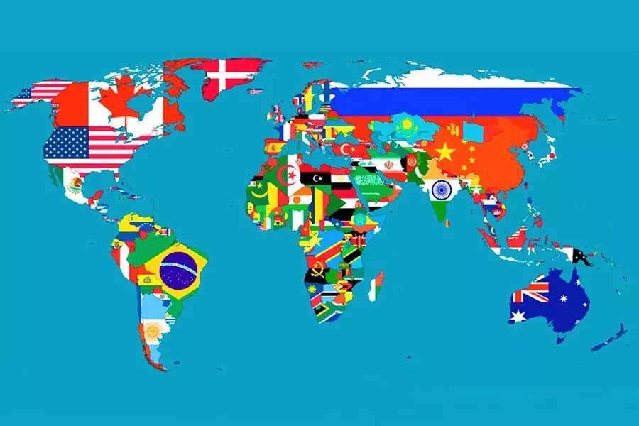

Страны мира
На данный момент в состав Организации Объединённых Наций входят 193 государства-члена и 2 государства-наблюдателя. Святой Престол (Ватикан) и Государство Палестина являются субъектами международного права и постоянными наблюдателями Генеральной Ассамблеи ООН, не являясь членами ООН.
Изображения
Коллаж


Видео о странах мира
Около десятка государственных образований фактически являются самостоятельными государствами, контролируя и осуществляя управление своими территориями, но либо не признаны другими государствами, либо признаны недостаточным их количеством (например, для вхождения в ООН образованию требуется признание 2/3 государств, входящих в организацию).
- Африка 54
- Азия 48
- Европа 44
- Северной Америке 23
- Австралии 14
- Южной Америке 12
| № | Страна | Флаг | Cтолица | Площадь |
|---|---|---|---|---|
| 1 | Австралия |

|
Канберра | 7 692 024 км² |
| 2 | Алжир |

|
Алжир (город) | 2 381 740 км² |
| 3 | Бангладеш |

|
Дакка | 148 460 км² |
| 4 | Республика Конго |

|
Браззавиль | 342 000 км² |
| 5 | Нигер |

|
Ниамей | 239,30 км² |
| Объединенные ячеки добавляются с помощью параметра colspan | ||||